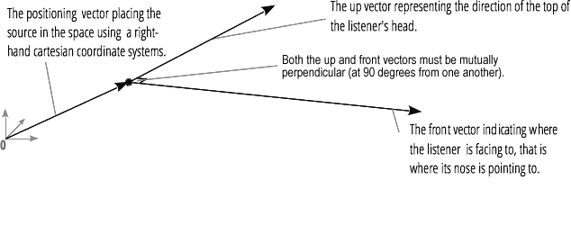

{{ APIRef("Web Audio API") }}
The AudioListener interface represents the position and orientation of the unique person listening to the audio scene, and is used in audio spatialization. All {{domxref("PannerNode")}}s spatialize in relation to the AudioListener stored in the {{domxref("BaseAudioContext.listener")}} attribute.
It is important to note that there is only one listener per context and that it isn't an {{domxref("AudioNode")}}.

The position, forward, and up value are set and retrieved using different syntaxes. Retrieval is done by accessing, for example, AudioListener.positionX, while setting the same property is done with AudioListener.positionX.value. This is why these values are not marked read only, which is how they appear in the specification's IDL.
positionX, positionY, and positionZ) values. The forward and up values are linearly independent of each other. The default is 0.positionX, positionY, and positionZ) values. The forward and up values are linearly independent of each other. The default is 0.positionX, positionY, and positionZ) values. The forward and up values are linearly independent of each other. The default is -1.positionX, positionY, and positionZ) values. The forward and up values are linearly independent of each other. The default is 0.positionX, positionY, and positionZ) values. The forward and up values are linearly independent of each other. The default is 1.positionX, positionY, and positionZ) values. The forward and up values are linearly independent of each other. The default is 0.Note: Although these methods are deprecated they are currently the only way to set the orientation and position in Firefox, Internet Explorer and Safari.
In a previous version of the specification, the dopplerFactor and speedOfSound properties and the setPosition() method could be used to control the doppler effect applied to {{domxref("AudioBufferSourceNode")}}s connected downstream — these would be pitched up and down according to the relative speed of the {{domxref("PannerNode")}} and the {{domxref("AudioListener")}}. These features had a number of problems:
Because of these issues, these properties and methods have been removed.
The setOrientation() and setPosition() methods have been replaced by setting their property value equivilents. For example setPosition(x, y, z) can be achieved by setting positionX.value, positionY.value, and positionZ.value respectively.
{{page("/en-US/docs/Web/API/AudioContext.createPanner","Example")}}
| Specification | Status | Comment |
|---|---|---|
| {{SpecName('Web Audio API', '#audiolistener', 'AudioListener')}} | {{Spec2('Web Audio API')}} |
{{Compat("api.AudioListener")}}